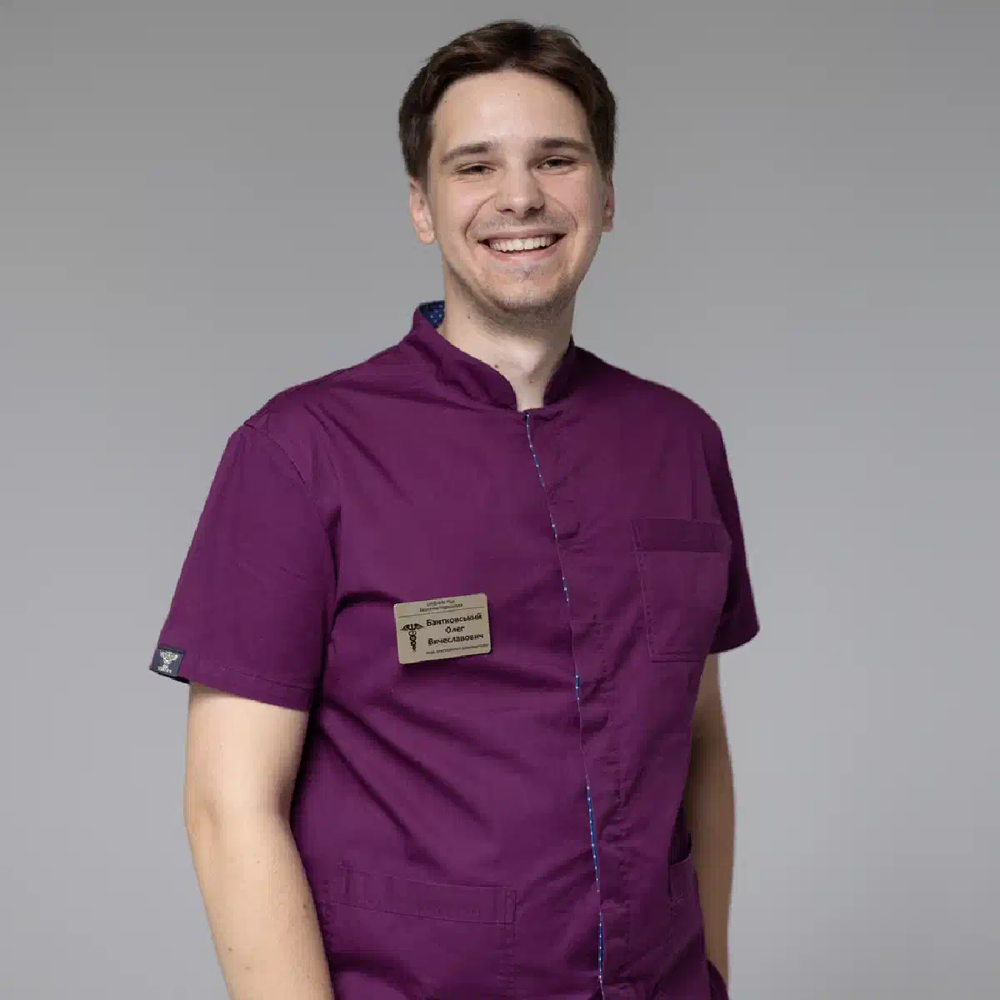

+38(068)
79 72 782
+38(068)
79 72 782Лечение пищевого отравления Черкассы
Быстрое восстановление и помощь на дому


Бесплатная консультация, работаем круглосуточно 24/7
Быстрое восстановление и помощь на дому

Дата написания: 2 авг. 2026 г.
Последнее обновление: 3 авг. 2026 г.
Лечение пищевого отравления в Черкассах направлено на восполнение потерянной жидкости, уменьшение выраженности симптомов и предупреждение осложнений. Пищевое отравление может сопровождаться тошнотой, рвотой, диареей, спазмами в животе, повышением температуры и общей слабостью. Основную опасность при многократной рвоте и частом жидком стуле представляет обезвоживание, при котором организм теряет не только воду, но и необходимые электролиты. При лёгком состоянии лечение обычно начинается с отдыха, питья небольшими порциями и применения аптечного раствора для пероральной регидратации. Если пациент не может пить из-за постоянной рвоты, испытывает сильную слабость, головокружение или имеет другие признаки выраженного обезвоживания, может потребоваться осмотр врача и внутривенное введение растворов. Всемирная организация здравоохранения указывает, что большинство случаев обезвоживания при диарее можно предупредить или скорректировать с помощью глюкозо-электролитных растворов для приёма внутрь, за исключением наиболее тяжёлых состояний.
Большинство пищевых отравлений связано с попаданием в организм вирусов, бактерий, паразитов или выделяемых ими токсинов. Реже причиной становятся вредные химические вещества. Загрязнение пищи может произойти во время производства, перевозки, хранения, приготовления или подачи продукта. Риск повышается при употреблении сырого или недостаточно приготовленного мяса, птицы, яиц, рыбы и морепродуктов. Потенциально опасными могут быть непастеризованные молочные продукты и соки, плохо вымытые овощи и фрукты, неправильно приготовленные консервы, готовые салаты, кондитерские изделия с кремом и блюда, которые долго находились без охлаждения. Причиной отравления также может стать нарушение правил хранения продуктов. Если готовая пища длительное время находится при комнатной температуре, в ней могут активно размножаться микроорганизмы. Опасность представляет и перекрёстное загрязнение, когда бактерии с сырого мяса, рыбы или яиц попадают на готовые продукты через руки, ножи, разделочные доски или кухонные поверхности.
К распространённым проявлениям пищевого отравления относятся тошнота, рвота, жидкий стул, боль или спазмы в животе и повышенная температура. У большинства людей заболевание протекает относительно легко, однако некоторые инфекции могут вызвать тяжёлое обезвоживание и другие осложнения. Обратиться к врачу необходимо, если в кале появилась кровь, диарея продолжается более трёх дней, температура превышает приблизительно 39 °C или рвота возникает настолько часто, что человек не может удерживать жидкость. Медицинская оценка также требуется при выраженной боли в животе, чёрном стуле, спутанности сознания и заметном ухудшении общего состояния. Признаками обезвоживания могут быть сильная жажда, сухость во рту, редкое мочеиспускание, тёмная моча, головокружение при вставании, слабость и предобморочное состояние. При появлении таких симптомов необходимо обратиться за медицинской помощью. Тяжёлое обезвоживание может потребовать лечения в стационаре.
Рвоту и диарею не всегда можно и нужно останавливать немедленно. Эти симптомы могут быть реакцией организма на инфекцию или пищевой токсин. Основной задачей в первые часы становится предупреждение обезвоживания и контроль общего состояния. При тошноте жидкость следует принимать небольшими глотками. Большой объём воды, выпитый сразу, может спровоцировать новый эпизод рвоты. Если жидкость удерживается, количество питья постепенно увеличивают. Для восполнения потери воды и солей предпочтительно использовать аптечный раствор для пероральной регидратации. Если рвота, слабость и обезвоживание появились после употребления алкоголя, капельница от похмелья может проводиться только после осмотра врача и исключения пищевого отравления, кишечной инфекции, панкреатита и других острых заболеваний. Противорвотные препараты назначаются врачом с учётом возраста пациента, предполагаемой причины отравления и сопутствующих заболеваний. Самостоятельное сочетание нескольких лекарств может вызвать побочные реакции или скрыть опасные симптомы. Лоперамид может временно уменьшить частоту стула у некоторых взрослых, однако он не устраняет причину заболевания.
Консультация врача необходима при многократной рвоте, частой диарее, выраженной слабости, головокружении, сухости во рту и уменьшении количества мочи. Обратиться за помощью также следует, если симптомы не уменьшаются после применения раствора для пероральной регидратации. Поводом для срочного осмотра являются кровь или гной в кале, чёрный стул, высокая температура, сильная боль в животе, шесть и более эпизодов жидкого стула за сутки, изменение поведения или спутанность сознания. Взрослому пациенту также требуется медицинская помощь, если диарея сохраняется более трёх дней или он не может выпить достаточное количество жидкости. Раннее обращение особенно важно для беременных женщин, пожилых людей, пациентов с иммунодефицитными состояниями, сахарным диабетом, заболеваниями сердца и почек. При таких состояниях потеря жидкости может быстрее привести к опасным нарушениям. Домашний вызов врача подходит не для всех случаев. При тяжёлом обезвоживании, потере сознания, судорогах, нарушении дыхания или признаках острого хирургического заболевания требуется экстренная госпитализация в стационар.
Лечение пищевого отравления на дому в Черкассах возможно при относительно стабильном состоянии пациента. Человек должен находиться при сознании, самостоятельно дышать, поддерживать контакт и не иметь симптомов, требующих срочной госпитализации. Домашнее лечение начинается с осмотра. Врач уточняет, когда появились симптомы, какие продукты употреблял пациент, сколько раз возникали рвота и диарея, присутствуют ли температура, боль, кровь или слизь в кале. Также учитываются хронические заболевания, аллергические реакции и лекарственные препараты, которые человек принимает постоянно. После оценки состояния врач определяет степень обезвоживания и выбирает подходящую тактику и капельницу от интоксикации на дому. При лёгком состоянии могут быть рекомендованы пероральная регидратация, питьевой режим, отдых и наблюдение. Если пациент не способен самостоятельно восполнять потерю жидкости, рассматривается проведение инфузионной терапии.
Вызов врача на дом при пищевом отравлении в Черкассах позволяет получить медицинскую оценку без самостоятельной поездки в клинику. Такой формат особенно удобен при выраженной слабости, головокружении, частом жидком стуле и повторной рвоте. При оформлении вызова желательно сообщить возраст пациента, время появления симптомов, количество эпизодов рвоты и диареи, температуру, наличие боли и хронических заболеваний. Если от похожих симптомов страдают несколько человек, употреблявших одинаковую пищу, об этом также необходимо предупредить специалиста. Во время визита врач измеряет артериальное давление, пульс, температуру и сатурацию, оценивает уровень сознания и признаки обезвоживания. После осмотра специалист определяет, можно ли продолжать лечение дома.
Первая помощь при пищевом отравлении заключается в обеспечении покоя и постепенном восполнении жидкости. При тошноте пациенту следует давать воду или раствор для пероральной регидратации небольшими глотками через короткие промежутки времени. Не следует заставлять человека сразу выпивать большое количество жидкости или принимать пищу при сохраняющейся рвоте. После уменьшения тошноты питьевой режим постепенно расширяют. До осмотра врача не рекомендуется самостоятельно принимать антибиотики, несколько противодиарейных препаратов одновременно или сильнодействующие противорвотные средства. Необходимо учитывать, что одинаковые симптомы могут возникать не только при пищевом отравлении, но и при аппендиците, панкреатите, кишечной непроходимости и других заболеваниях. Желательно сохранить упаковку подозрительного продукта и подготовить список лекарств, которые принимает пациент. Если похожие симптомы возникли у других членов семьи, эту информацию следует сообщить врачу.
Капельница при пищевом отравлении в Черкассах проводится по медицинским показаниям. Основной целью инфузионной терапии является восполнение жидкости и электролитов, потерянных при рвоте и диарее. Внутривенное лечение может потребоваться, если пациент не способен пить, жидкость сразу вызывает рвоту, наблюдаются выраженная слабость, головокружение, падение артериального давления или другие признаки значительного обезвоживания. При тяжёлом состоянии пациенту может потребоваться лечение в стационаре. Перед процедурой врач проводит осмотр и оценивает работу сердечно-сосудистой системы. Объём и скорость введения жидкости подбираются индивидуально. Особая осторожность необходима при заболеваниях сердца и почек, поскольку избыточный объём растворов может ухудшить состояние. Капельница не является способом мгновенно вывести все токсины из организма. Она поддерживает водно-электролитный баланс и помогает предупредить осложнения обезвоживания. Лечение причины заболевания проводится отдельно и зависит от результатов осмотра.
Стоимость капельницы при пищевом отравлении в Черкассах начинается от 2199 грн.
| Популярные услуги | Цена |
|---|---|
| Нарколог Черкассы | От 1500 грн |
| Капельница от алкоголя | От 2199 грн |
| Вывод из запоя на дому | От 2199 грн |
| Кодирование от алкоголя | От 6000 грн |
Предотвращение обезвоживания является основной задачей при рвоте и диарее. Организм теряет не только воду, но и натрий, калий и другие электролиты, необходимые для нормальной работы сердца, мышц и нервной системы. Жидкость следует принимать часто и небольшими порциями. При выраженной тошноте лучше делать несколько небольших глотков каждые несколько минут, чем пытаться сразу выпить стакан воды. Оптимальным вариантом является аптечный раствор для пероральной регидратации, содержащий глюкозу и электролиты в подходящем соотношении. Порошок необходимо растворять строго в том объёме воды, который указан в инструкции. Изменение пропорций может сделать раствор слишком концентрированным или недостаточно эффективным. Если пациент не может пить из-за постоянной рвоты или у него появились признаки выраженного обезвоживания, врач может назначить капельницу от токсинов. Инфузионная терапия помогает восполнить потерю жидкости и электролитов, однако не выводит все токсические вещества мгновенно и проводится только после оценки состояния пациента.
При лёгком и умеренном обезвоживании применяются растворы для пероральной регидратации. Они содержат воду, соли и глюкозу, которая помогает кишечнику усваивать натрий и жидкость. Такие растворы используются для профилактики и лечения обезвоживания при большинстве случаев диареи. Если пациент не способен пить или потеря жидкости становится значительной, врач может назначить внутривенные кристаллоидные растворы. В таких случаях дезинтоксикационная капельница применяется для восполнения жидкости, коррекции электролитных нарушений и поддержания общего состояния организма. Она не обеспечивает мгновенного выведения всех токсинов и проводится только после медицинского осмотра. Конкретный раствор, его объём и скорость введения определяются после оценки артериального давления, пульса, степени обезвоживания, возраста пациента и сопутствующих заболеваний. В состав терапии могут включаться симптоматические препараты, однако они не назначаются автоматически каждому пациенту. Решение о применении противорвотных и других лекарственных средств принимает врач.
Капельница при диарее и рвоте может потребоваться при быстрой потере жидкости, невозможности пить и выраженном ухудшении самочувствия. Частая рвота и жидкий стул способны привести к обезвоживанию, особенно у пожилых людей и пациентов с хроническими заболеваниями. Перед началом процедуры специалист оценивает общее состояние, артериальное давление, частоту пульса и признаки нарушения кровообращения. Врачу важно знать, как часто возникают рвота и диарея, есть ли температура, кровь в кале или сильная боль. Капельница на дому помогает восполнить жидкость, однако не всегда устраняет рвоту и диарею сразу. Скорость восстановления зависит от причины заболевания. При вирусной инфекции обычно требуется поддерживающее лечение, а при некоторых бактериальных заболеваниях может понадобиться специальная терапия.
Сорбенты могут применяться как дополнительное симптоматическое средство при некоторых видах пищевого отравления. Они связывают часть веществ в просвете пищеварительного тракта, но не способны быстро устранить уже развившееся обезвоживание или вылечить кишечную инфекцию. Приём сорбента не отменяет необходимость пить воду и растворы электролитов. Даже если диарея или тошнота уменьшились, потерянную жидкость необходимо продолжать восполнять. Сорбенты могут влиять на всасывание других лекарственных средств. Поэтому между их приёмом и использованием постоянных препаратов может потребоваться временной интервал, указанный в инструкции. Не рекомендуется одновременно использовать несколько сорбентов или превышать рекомендованную дозу. При тяжёлых симптомах самолечение сорбентами не должно откладывать обращение к врачу.
Основным аптечным средством при рвоте и диарее является порошок для приготовления раствора пероральной регидратации. Он помогает восполнить потерю воды и электролитов и подходит для применения дома при отсутствии тяжёлых симптомов. Дополнительно может понадобиться термометр для контроля температуры. Сорбент можно приобрести после консультации с врачом или фармацевтом, учитывая возраст пациента, хронические заболевания и принимаемые лекарства. Не рекомендуется самостоятельно покупать антибиотики и начинать их приём «на всякий случай». Также не следует бесконтрольно сочетать противорвотные, противодиарейные и обезболивающие препараты. Лоперамид можно применять не во всех случаях. При крови в кале, высокой температуре, тяжёлой диарее после антибиотиков, вздутии живота или продолжительности симптомов более 48 часов необходима предварительная консультация врача.
Антибиотики нужны не при каждом пищевом отравлении. Многие случаи связаны с вирусами или токсинами, на которые антибактериальные препараты не действуют. Врач может назначить антибиотик при определённых бактериальных инфекциях, тяжёлом течении заболевания или повышенном риске осложнений. Выбор препарата зависит от предполагаемого возбудителя, симптомов и результатов исследований. Самостоятельное лечение антибиотиками может вызвать побочные реакции, нарушить кишечную микрофлору и затруднить дальнейшую диагностику. Некоторые препараты также способны усилить диарею. Если расстройство появилось во время приёма антибиотика или вскоре после завершения курса, об этом необходимо сообщить врачу. Такая диарея может требовать специальной диагностики и другого подхода к лечению.
При сохраняющейся тошноте аппетит может временно отсутствовать. Заставлять человека есть не нужно, однако длительное голодание в большинстве случаев также не требуется. После возвращения аппетита можно постепенно переходить к привычному питанию. Первые порции должны быть небольшими. Можно выбирать блюда, которые хорошо переносятся пациентом и не усиливают тошноту или боль. Часто подходят каши, рис, картофель, нежирный суп, бананы, сухари, подсушенный хлеб и нежирное мясо. На время восстановления желательно ограничить жирную и жареную пищу, кофеин, алкоголь, сладкие напитки и концентрированные соки. У некоторых людей после пищевого отравления временно ухудшается переносимость молока и других продуктов с лактозой. Основное значение имеет не строгая диета, а достаточное употребление жидкости и постепенное возвращение к нормальному рациону. Специалисты не рекомендуют продолжительное голодание или неоправданно ограниченное питание при диарее.
Лечение кишечной инфекции зависит от её причины и тяжести состояния. Вирусные, бактериальные и паразитарные заболевания могут проявляться похожими симптомами, поэтому определить возбудителя только по жалобам не всегда возможно. Основой помощи при диарее и рвоте остаётся восполнение жидкости и электролитов. При лёгком состоянии используются растворы для пероральной регидратации. Если пациент не может пить или у него развивается тяжёлое обезвоживание, может потребоваться внутривенная терапия. При высокой температуре, крови в кале, продолжительной диарее и выраженной боли врач может назначить лабораторные исследования. Антибиотики применяются только при определённых бактериальных инфекциях и не используются автоматически при каждом расстройстве кишечника. Для снижения риска передачи инфекции необходимо регулярно мыть руки с мылом, использовать отдельное полотенце и не готовить пищу для других людей до полного прекращения симптомов.
Круглосуточное лечение отравления в Черкассах позволяет вызвать медицинского специалиста днём, ночью, в выходные и праздничные дни. Домашняя помощь может быть оказана при стабильном состоянии пациента, когда отсутствуют признаки, требующие экстренной госпитализации. Врач проводит осмотр, оценивает степень обезвоживания и определяет, нужна ли капельница. При наличии показаний проводится инфузионная терапия, после которой пациент получает рекомендации по дальнейшему питьевому режиму, питанию и наблюдению за состоянием. Ориентировочно специалист может прибыть по адресу в течение 40 минут. Точное время зависит от района Черкасс, дорожной ситуации и доступности ближайшего врача. Если человек потерял сознание, не реагирует на обращение, испытывает судороги, затруднение дыхания или внезапную сильную боль, ожидать домашнего врача нельзя. В таких ситуациях необходимо немедленно обратиться к доктору.
Телефон для консультации и вызова нарколога в Черкассах: +38(050-021-69-57).

Статья проверена экспертом
Могучев Станислав
Врач терапевт, ординатор
Возможно интересная статья:
Бетаргин при алкоголе: правда и мифы

Да, мы строго соблюдаем полную конфиденциальность на всех этапах лечения. Информация о пациенте, диагнозе и прохождении терапии не передаётся третьим лицам. Обращение к нам не влечёт постановку на учёт. Вы можете быть уверены в безопасности и анонимности.
Программа лечения разрабатывается индивидуально после консультации со специалистом. Учитываются вид зависимости, её длительность, физическое и психологическое состояние пациента. Такой подход позволяет повысить эффективность терапии и снизить риск срыва. Мы не используем шаблонные решения.
Да, мы сопровождаем пациентов и после основного курса лечения. Проводятся консультации, рекомендации по адаптации и профилактике рецидивов. При необходимости возможна дальнейшая психологическая поддержка. Это помогает сохранить результат и вернуться к полноценной жизни.
Анонимно

Не знаю что съел, но рвало очень крепко. Вызвал врача. Станислав Вячеславович просто спаситель. 10/10.
Номер телефона:
+380 (68) 797 27 82
+380 (50) 021 69 57
Адрес наркологического центра вашего города уточняйте по
телефону
Работаем в: Киеве, Одессе, Львове, Харькове, Днепре,
Запорожье, Черкассах, Чугуеве, Черноморске, Каменском
Telegram: t.me/umbrellaplus
График работы: Круглосуточно